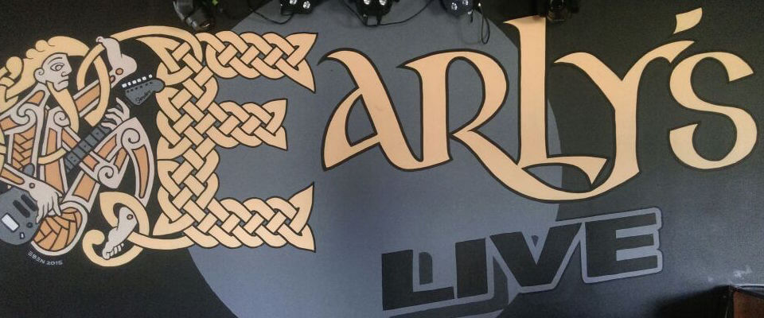
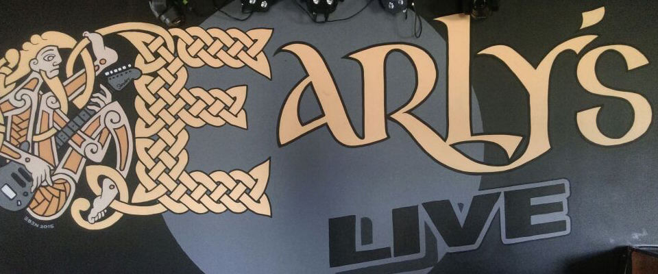

Early's Bar, Arranmore Island
Early's Bar is a family run pub situated on the idyllic island of Arranmore, County Donegal. Steeped in history and legendary for it's music and craic, Early's Bar is the perfect spot to relax, have fun and forget your worries for a while.
With that unmistakable charm of the traditional Irish pub, relaxed and calm in it's own way, Early's can also have a vibrancy and energy which can create happy memories that will last a lifetime.

Less than a two minute walk from the ferry pier on the island, Early's Bar is the ideal location for a quiet drink on a day-trip to Arranmore. Bar food is served on the premises including their well renowned stone baked pizzas. Every evening the bar is a regular spot for both locals and tourists alike and you will always be guaranteed an enjoyable night and a bit of craic when the guitar is brought out for a sing-song.
Early's bar has entertainment nightly in the high season with live bands and discos in our newly renovated 'Early's Live' function room and impromptu sessions in the bar where musicians are always welcome. So next time you're in Donegal, make your way to the island.

How To Get Here
We're very easy to find once you get to the island, it's only a short walk from the ferry pier and you're as good as at the bar!
Early's B&B
Early's Bed and Breakfast is a newly built, well appointed B&B, located on the picturesque island of Arranmore. A warm welcome awaits you.